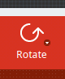
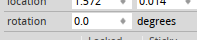

Rotating Everything¶
Published on 2017-09-17 in Fritzing Tricks.
Rotating elements is easy. You just use the “rotate” button in the bottom left corner of the screen, right?
Well, yes, you can do that and that works fine most of the time. But there are limitations. By default, that button rotates things by 90°. Some objects can be rotated by 45° by clicking on the small arrow on that button, and selecting the appropriate option for the pop-up menu. But some things, such as vias and holes, can’t be rotated at all. Initially that makes sense. After all, why would you want to rotate a round hole or via — they look the same no matter how they are rotated! However, you might still need to rotate a set of holes or vias, or a mix of parts (like your whole design, for example) that includes holes and vias in it. And Fritzing won’t let you do that.
I had this problem with an Adafruit Feather shield that I was designing — it’s slightly longer than 5cm, but my board house would only make 5×5cm boards cheaply, anything larger costs extra. But I figured out that I can fit this shield into the 5×5cm outline if only I rotate it by 45°. But how can I do that when it contains vias and holes?
Looking for a way to do this, I found this “rotation” property in the side pane:
This lets you rotate a single object by pretty much any angle, not just multiplies of 45° or 90°. In particular, you can rotate your PCB by any amount, even though that red button only lets you do 90° for the PCBs. Neat! But I can’t use that when I have multiple objects selected, so it doesn’t solve the problem.
I wish I could also figure out the next piece of the puzzle myself, but I actually found it on the Fritzing’s user forum. You see, the PCB has one property that other objects don’t have — the “sticky” checkbox, right under that rotation property:

When an object is sticky, whenever you move it, it will also take with it all other objects that touch it. And rotation counts as movement here. So all I had to do is make my PCB sticky and set its rotation, and everything on it rotated together with it. Presto!
Of course, sometimes you want to just rotate a few selected parts. Then you can drag a second PCB onto your design, make it sticky, put all the parts you need rotated on it, rotate it, and then delete the PCB and move the parts back where you need them. A bit hacky, but workable.